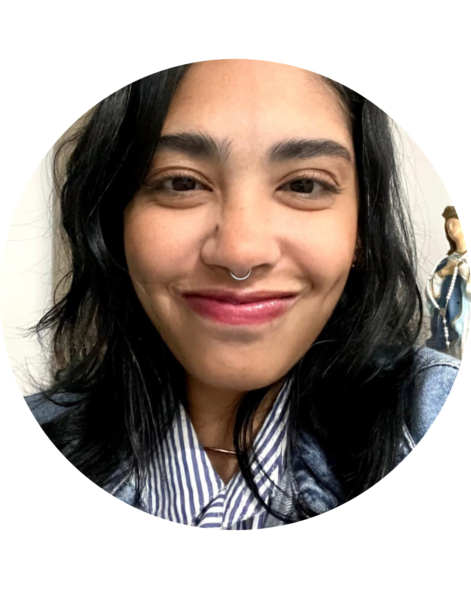

Estudante de Análise e Desenvolvimento de Sistemas
Análise e Desenvolvimento de Sistemas - Faculdade Senac Pernambuco (2025)
Comunicação Social — Publicidade e Propaganda - Universidade Federal de Pernambuco (2014 - 2018)
Sou estudante de Análise e Desenvolvimento de Sistemas e estou embarcando na jornada do desenvolvimento back-end com foco em Python. Sou movida pela curiosidade e pela vontade de construir soluções eficientes e escaláveis. Minha paixão se estende à Ciência de Dados e Inteligência Artificial, áreas onde busco constantemente aplicar e expandir meus conhecimentos. Acredito no poder dos dados para gerar insights e na IA para criar inovações. Estou em um momento de aprendizado intenso e mão na massa, construindo uma base sólida em desenvolvimento back-end e explorando o potencial de tecnologias como MySQL para gerenciamento de dados e modelos avançados como o Gemini para aplicações de IA.
Busco ativamente oportunidades para aplicar e aprimorar minhas habilidades em um ambiente colaborativo e de aprendizado.